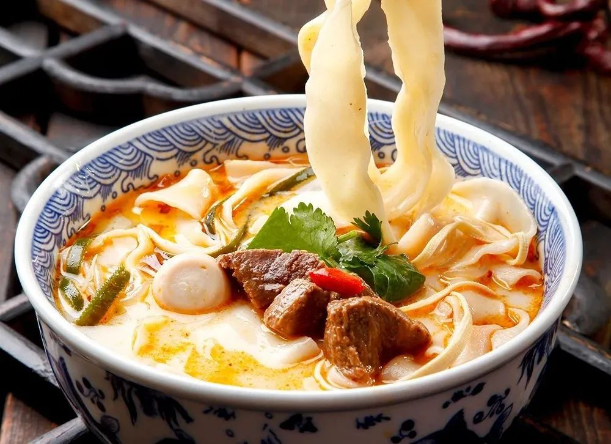
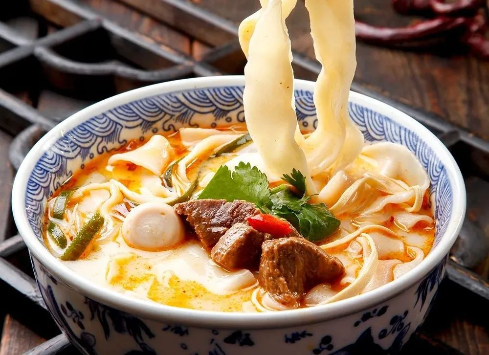
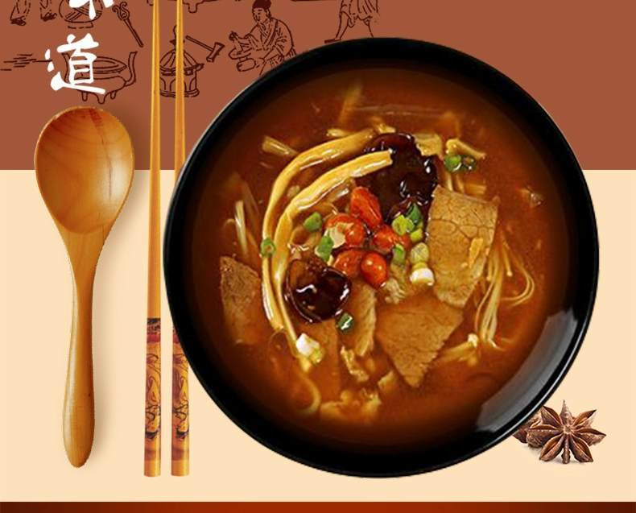
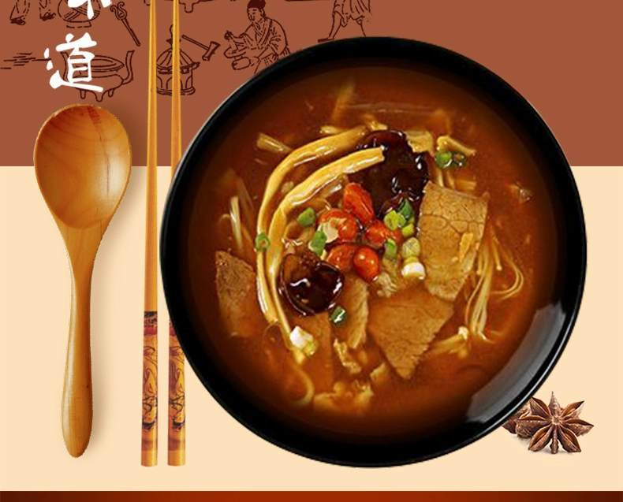
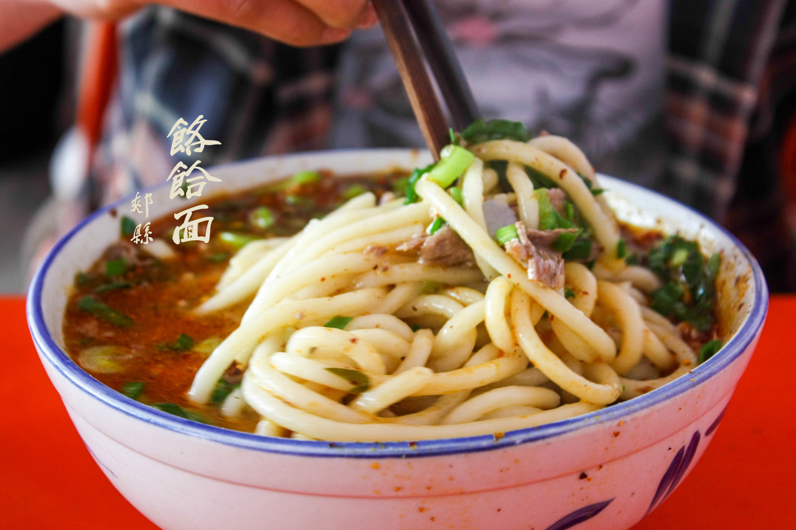
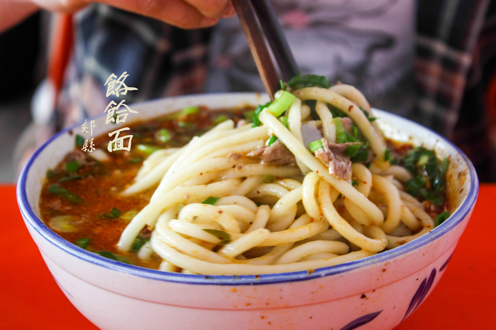

河南烩面
 

烩面是河南三大小吃之一，有着「中国十大面条之称」
它是一种以荤，素，汤，饭聚而有之的一种民间传统美食，凭借着其味道鲜美，经济实惠，简单易做等享誉中原，现在慢慢的也在全国各地遍及起来。正宗的河南烩面是以优质的高筋面粉为原材料，并辅以高汤以及豆腐皮，青菜，粉条等多种配菜而成的一种类似宽面条的面食。其特点有汤美味，面劲道，营养高。
河南烩面根据配料的不同还可分为：羊肉烩面，牛肉烩面和三鲜烩面五鲜烩面等等。与洛阳的水席，开封的包子并称河南三大小吃。还与老北京炸酱面，山西的刀削面，湖北的武汉热干面，四川的担担面共称中国五大面食。
胡辣汤
 

清晨叫醒河南人的不是闹钟，而是一碗辛辣、鲜香、浓郁的胡辣汤。
每个知名美食背后都有一段荡气回肠的故事来背书，逍遥镇胡辣汤自然也不例外，有关于宋徽宗的传说、有关于严嵩的传说等等，但都不足以为信。 比较正宗的逍遥镇胡辣汤的汤料配方由二三十种植物香料混合而成，再用牛羊肉熬汤，辣中虽带有肉鲜味，但主角绝对是胡椒，喝起来口感猛烈而辛辣，下肚后顿感逍遥。 除此之外逍遥镇胡辣汤的配料也是非常讲究的，必须选用手工搓洗的面筋，吃起来才筋道有面香味，而洗完面筋的面水刚好是胡辣汤的芡汁，一点也不浪费，然后再搭配上黄花菜、木耳，肉香伴着丰富的配料，那滋味层层递进，一碗下肚后酣畅又满足。
饸饹面
 

郏县饸饹面是河南郏县地区一道用料考究、独具特色并且已经有着千年历史的传统特色小吃，简称郏县饸饹。在郏县，无论是县城，还是乡镇，甚至稍微大点的村子，都有饸饹店。郏县人的一天是被一碗劲道十足、鲜香四溢的饸烙面唤醒的。
饸饹的做法简单，但是工具特殊。木质的饸饹床直接架在灶台上，人坐在饸饹床上，利用杠杆原理把饸饹面直接轧到沸腾的锅里，翻腾几下，便可捞面盛碗。入碗的饸饹面，撒上一大把翠绿的葱花，铺上切好的薄羊肉片，再点上用羊油烹制的辣椒油，浇上一勺香气四溢的羊汤，一碗筋滑利口的饸饹面就出锅了。如果再配上一个炕得焦黄香脆的火烧，吃起来就足以让人酣畅淋漓、大呼过瘾。那味道，只要你吃过，就再也忘不掉!